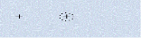
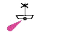
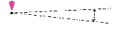
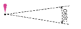
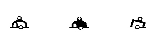
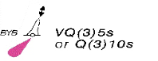
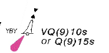
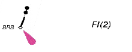

| 181. Знакът нанесен на морска карта означава:  |
|
опасност за корабоплаването, която е над водата опасни подводни скали с неизвестна дълбочина над тях скали, които се виждат над водата място, на което е потънал неизвестен кораб |
| 182. Знакът нанесен на морска карта означава:  |
|
закотвена пилотска станция, носеща червена светлина плаваща УКВ радиоразпръсквателна станция плаващ фар буй с кръстовидна топова фигура, светещ червено |
| 183. Знакът нанесен на морска карта означава:  |
|
секторна светлина кръгово видима светлина със сектор, в който не се вижда кръгово видима светлина със сектор, в който свети червено кръгово видима светлина със сектор, в който плаването е забранено |
| 184. Знакът нанесен на морска карта означава:  |
|
кръгово видима светлина със сектор, в който не се вижда кръгово видима светлина със сектор, в който свети червено кръгово видима светлина със сектор, в който плаването е забранено кръгово видима светлина със сектор, в който е забранено заставането на котва |
| 185. Знакът нанесен на морска карта означава: |
|
швартови буй коничен буй швартова веха цилиндричен буй |
| 186. Знакът нанесен на морска карта означава: |
|
швартови буй коническа веха веха швартова веха |
| 187. Знакът нанесен на морска карта означава:  |
|
цилиндрична веха швартови буйове цилиндричен буй веха |
| 188. Знакът нанесен на морска карта означава:  |
|
западен буй многобързо пробляскващ 3 проблясъка за 5 сек. или бързо пробляскващ 3 проблясъка за 10 сек. северен буй, многобързо 3 проблясъка за 5 сек. или бързо пробляскващ 3 проблясъка за 10 сек. буй обозначаващ изолирана опасност източен буй многобързо пробляскващ 3 проблясъка за 5 сек. или бързо пробляскващ 3 проблясъка за 10 сек. |
| 189. Знакът нанесен на морска карта означава:  |
|
западен буй многобързо пробляскващ 9 проблясъка за 10сек. или бързо пробляскващ 9 проблясъка за 15 сек. северен буй, многобързо 9 проблясъка за 10 сек. или бързо пробляскващ 9 проблясъка за 15 сек. източен буй многобързо пробляскващ 9 проблясъка за 10 сек. или бързо пробляскващ 9 проблясъка за 15 сек. буй обозначаващ безопасни води |
| 190. Знакът нанесен на морска карта означава:  |
|
веха обозначаваща изолирана опасност веха обозначаващ безопасни води северна веха, пробляскваща 2 пъти веха обозначаваща нова опасност, пробляскваща с два червени проблясъка |